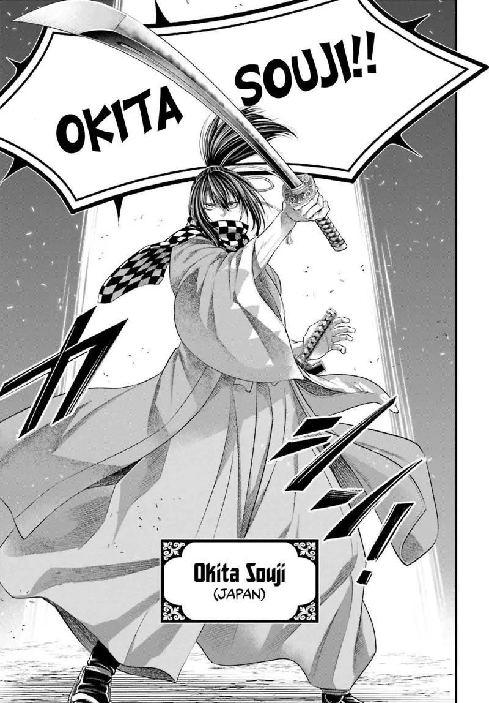

Unlived Blade
The Shinsengumi's genius died of tuberculosis at twenty-five — and his sword has been waiting for its duel ever since.

Unlived Blade
The Shinsengumi's genius died of tuberculosis at twenty-five — and his sword has been waiting for its duel ever since.
Feature map
Level-by-level features, as the figure refined them.
Present Swordsmanship
Passive stance engine · techniques cost as listed.
Four stances: HIGH (raised power), CENTER (precision/thrust), LOW (compressed launch), PASSING (moving through the opponent). Recenter (bonus action): choose any stance; breaks the current combination. Perfect Link: every named sword technique has an ENTRY → EXIT; if the previous technique's Exit matches the next technique's Entry and it immediately follows, the second is Linked and gains its printed Perfect Link benefit. At character creation, choose DEX or WIS as your CE ability for this technique (zack-ruled); locked thereafter. Sandanzuki (CENTER→CENTER, replace one attack, 1 CE): one katana attack; on hit, weapon damage + one additional weapon damage die. Perfect Link: +one more weapon damage die. Ryuubiken (HIGH→LOW, replace one attack, 1 CE): on hit, the target suffers Open Guard (−2 AC against your next sword attack before the end of your turn). Perfect Link: the target also gains no AC bonus from a reaction against that next Linked attack. Kisoutotsu (LOW→PASSING, replace one attack, 1 CE): move up to 10 ft directly toward a creature (no movement spent), then one katana attack; on hit, move up to 5 ft through or around the target if a legal destination exists. Perfect Link: the approach becomes 15 ft and does not provoke from that target.
Demon Child
Bonus action · 2 CE · up to 1 minute.
Speed +10 ft — the body keeping up with legal sword routes, not a generic buff. Demon Follow-Through: once per turn after hitting with a named sword technique, if its Exit matches the Entry of a different named technique you know, immediately perform that technique as part of the same action and pay its normal cost. After the sequence, take PB internal damage — cannot be resisted or redirected.
Sword Time
Passive · Future Forms cost as listed.
Three Unlived Future Forms. Each begins every long rest UNLIVED; first use makes it SPENT until the next long rest. A Future Form may ignore its Entry requirement when invoked; its printed Exit still applies; naturally entering from the correct stance grants its Perfect Link benefit. A spent future cannot be lived twice. Hiryuu (PASSING→HIGH, 0 CE): leap up to 10 ft (including vertically), one katana attack, land within 5 ft of the target. Perfect Link: the attack has advantage. Then SPENT. Sharyuu (LOW→CENTER, 0 CE): one katana attack; on hit, rotate into another open space within 5 ft without provoking from the target, and another hostile creature within your reach takes slashing damage equal to PB. Perfect Link: the secondary damage becomes 2×PB. Then SPENT. Torao (HIGH→CENTER, 0 CE): heavy descending katana attack; on hit, weapon damage +2 weapon damage dice; target Str save or falls prone. Perfect Link: non-Domain damage reduction against Torao is reduced by PB. Then SPENT. No-Kamae (reaction, 1 CE, when missed by a melee attack): move 5 ft without provoking from that creature and choose any stance — a survival tool, not a Perfect Link.
Demon Child Release
Bonus action · 4 CE · once per long rest · requires Demon Child · up to 1 minute.
Speed bonus becomes +20 ft; Demon Follow-Through may trigger twice per turn; movement inside named techniques +5 ft. Each Follow-Through still deals PB internal damage. When Release ends: 10% max HP damage — it cannot reduce you below 1 HP unless you voluntarily kept the state active after reaching half HP.
Combination Recipe — Kisou Sandanzuki
Normal CE costs of both techniques.
During Release, Kisoutotsu → Sandanzuki may be performed as a single uninterrupted Perfect Link — the recipe bridges PASSING→CENTER. Sandanzuki is made at advantage; on hit, normal Sandanzuki damage +1 additional weapon damage die, ignoring resistance to the technique's slashing damage, and the target cannot use reactions against that attack.
Sword Demon of Truth
Passive.
Realized Future: at the end of each long rest, choose one of Hiryuu, Sharyuu, or Torao — it becomes REALIZED until the next long rest (2 CE per use, no longer becomes SPENT, must obey its printed Entry normally). Perfect Sword Time: once per turn when a Linked sword technique hits, alter its printed Exit into one other stance (never Recenter — the technique itself ends differently).
Maximum, Domain, or equivalent.
Capstone material.
Enpi Reiten (Black Kite's Heavenly Return)
Choose up to PB distinct sword techniques you know and arrange them into a sequence. Present Forms obey Entry/Exit normally; Unlived Future Forms may bridge any Entry mismatch even if already SPENT — a bridging Future Form counts as selected for the distinct-technique rule. Each technique keeps its normal attack roll, damage, and effect. No technique creates another Demon Follow-Through. After the last strike, Release ends immediately; take 5% max HP for every attack after the first; then normal Technique Burnout.
Tenshou Sandanzuki, Realized
The combination he never got to perform — three thrusts in one motion. Make three sword attacks, against one creature or divided among creatures within your reach: each deals weapon damage +2 dice, and the third thrust ignores AC bonuses from cover and reactions. This use never triggers Demon Follow-Through — the future, finally lived on its own terms.
Build-defining options.
Historical-figure techniques grant no feats — the figure's art is complete as written, and the builder's feat picker excludes these techniques. Take the progression as the build.